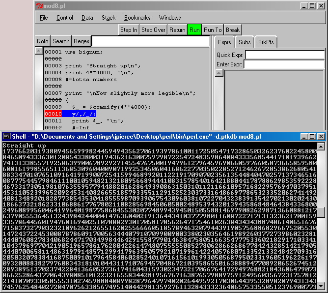

Somebody snitched on me ♪ Are you a closet shotgun debugger? Or maybe you use a liberal sprinkling of prints or clucks? Of course the recommended practice though, is to use the perl debugger; invoked by the switch -d. The standard perl debugger, while powerful, can be pretty intimidating or just plain painful. Enter ptkdb, a simple GUI debugger in Perl/Tk. It provides the usual feature set: breakpoints, stepping, and watching (full expressions, not simply variables). ptkdb is pretty nifty and can be a godsend, if you remember to use it ;-)
No code sample today, the screen shot below was taken of one from last year; less Interpolation.
